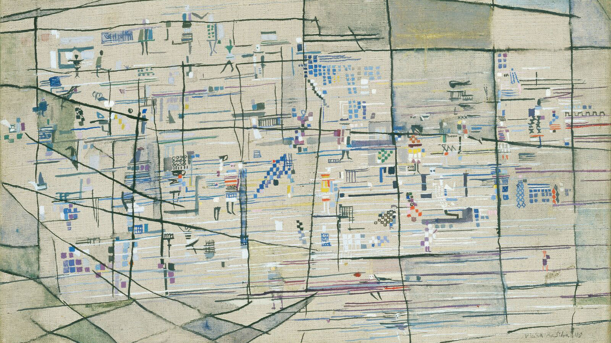

Lisbon is an easy city to fall in love with because of the sheer magnitude of sights to see and things to experience. The cobbled hilly streets, the charming trams, the iconic tiled buildings with the Tagus river in the background... all make this city so beautiful to walk around and explore. Here are some of our recommendations:
Castelo de São Jorge
Head over to the Alfama neighborhood and walk through the steep, winding streets to see this historic castle.
Tram 28
Catch the quaint wooden yellow tram 28, from the Martin Moniz stop close to the hotels, for the quintessential journey through the historic districts of Alfama, Baixa, Estrela, and Graça. Beware of lines for the tram as it will be peak tourist season.
LX Factory
An 1846 factory transformed into a cool, hipster destination with small shops, artwork, and restaurants. Come for the bookstore and the tinned fish store!
Belém Tower
A UNESCO world heritage site, it's a 16th century monument symbolizing Portugal's age of discovery. It has great views of the Tagus River and intricate craftsmanship. While you're in Belem, also check out Jeronimos Monastery, equally stunning. (FYI our wedding venue is in also in Belém!)
You can get to Belém by tram, or you could rent a bike or take a stroll along the extensive riverfront pathway all the way from the center of town.
Sintra
You can certainly spend more than a day visiting Sintra. Only a 45-minute train (or Uber) ride from Rossio station (across from Altis Avenida Hotel), Sintra is full of castles and palaces to explore. (The grounds of the Quinta da Regaleira are Alison's favorite!)
Cascais and Other Beaches
Lisbon's surrounding neighborhoods are home to some of the most beautiful beaches. Head 30 minutes west via train to Cascais, a family-friendly beach town where the royals once spent their holidays. Or head south to Costa da Caparica for one of the best places to surf (or take a lesson!), complete with beachside restaurants and bars.
Take a Walking Tour

Take a stroll around town and learn a bit about Lisbon's long and storied history. We can recommend this tour we took in the spring that meets daily right by our wedding pickup spot, and there are several other tours operating in the area as well.
Lisbon's Art Scene
Visit one of Lisbon's many art museums! We loved the new Centro de Arte Moderna at the Gulbenkian Foundation. If you're already visiting Belém, you could stop by the Museum of Contemporary Art there as well.
Alternatively, venture out of the city center and check out all of the new art galleries and burgeoning art scene of the neighborhoods of Beato and Marvila.
Pastel de Nata Workshop
Learn professional tips and tricks on how to make this iconic Portuguese dessert with local pastry chefs. There are classes throughout the city, so a quick google search will help you find one suited for you. And if you have no interest in learning how to make them… eat them!
National Tile Museum
You'll find azulejos, Portugal's traditional tiles, adorning the interiors and exteriors of buildings all over town. Visit the National Tile Museum to see how they started, how they're made, and how the art form has evolved over time.
Explore the Neighborhoods
Get your walking shoes on and explore the hilly streets of Lisbon by foot! Pop into cute shops, try out all of the cafes, admire the colorful buildings, and indulge in local dishes at the restaurants. We love the Chiado, Barrio Alto, and Principe Real neighborhoods for the new world charm, but also Alfama and Mouraria for all the history.
For restaurant/cafe/store recommendations, please visit and save Alison and David's wedding list (Google Maps), which we'll continue to update during our next trip in March!